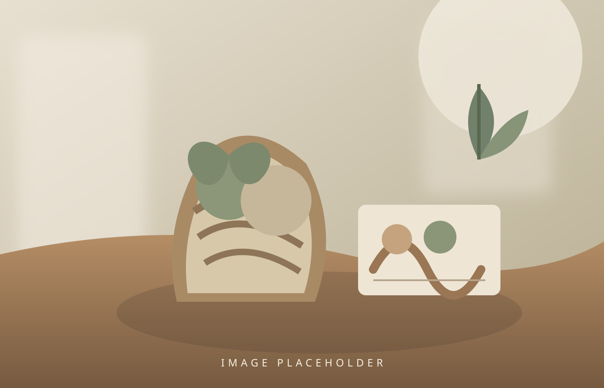
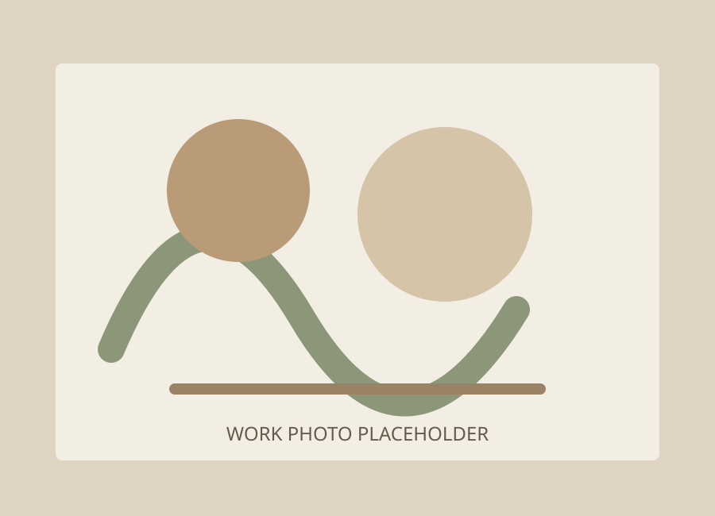

自分のペースで
ノルマはありません。無理のないペースを大切にします。
A PLACE TO FIND YOUR OWN WAY
「やってみたい」を、
ここから少しずつ。
クランは、ものづくりや内職を通して
自分らしい「働く」を一緒に見つける場所です。

MAKE · TRY · GROW※メイン写真は後日差し替え予定です一人ひとりのペースや「やってみたい」という気持ちを大切にしながら、内職やものづくりなど、さまざまなお仕事に取り組んでいます。
無理なく自分に合った「働く」を一緒に見つけ、安心して過ごしながら豊かな経験を重ね、新しい可能性を広げられる場所を目指しています。
急がなくていい。比べなくていい。
あなたの歩幅で、一歩ずつ。
初めての方も大丈夫。
得意なことや興味に合わせて、できることから始めます。

01 — CRAFTCRAFT & HANDMADE
手を動かしながら、自分のペースで作品づくり。完成した作品は、セレクトショップやマルシェなどで不定期に販売しています。
LIGHT WORK
一つひとつ丁寧に取り組む作業です。手順を確認しながら、自分に合ったペースで進められます。
今ある仕事だけでなく、利用される方の希望や適性に合った仕事も積極的に探します。
ノルマはありません。無理のないペースを大切にします。
生活リズムや体調に合わせた利用を相談できます。
スタッフと一緒に、できることから始めましょう。
作品販売を通じて、社会とのつながりを感じられます。
午後には3時のおやつ。休憩も大切な時間です。
活動内容は一例です。
曜日や利用時間はお気軽にご相談ください。
登所・活動スタート
休憩
内職・軽作業
休憩
内職・軽作業
昼食・休憩（お弁当補助あり）
午後の活動
休憩
ものづくり・創作活動
おやつ・休憩
ものづくり・内職・軽作業
終業
工賃例：週5日・1日5時間利用の場合、月16,000円。※工賃は作業内容や利用状況等によって異なります。
LET'S START WITH A VISIT
どんな場所か見てみたい。自分にできる仕事があるか相談したい。
そんなお問い合わせもお待ちしています。